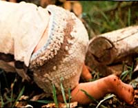
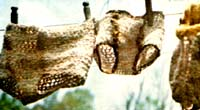
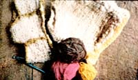

When we moved to our West Virginia homestead, we were committing ourselves to live lives that were as environmentally oriented as we could make them ... without becoming fanatics on the subject.
It seemed only right, then, for our firstborn-a beautiful baby girl-to be delivered naturally, for her first food to be mother's milk, for her to wear plain cotton diapers, and for her clothes to be made with simple patterns and from natural fibers.
Everything about our baby, in short, seemed part of a larger harmony ... except for the plastic pants that I put on over her diapers. The pants weren't that big a problem, to be sure ... but they did clash enough with the rest of the baby's clothes to push me into doing a little research. "After all," I reasoned, "rubber and plastic haven't been around as long as babies have. Other mothers at other times have faced the problem that now confronts me. And they must have found a way of solving it."
Well, as most people know, East Coast Indians (who most cer tainly didn't put plastic pants on their papooses diapered babies with the inner bark of oak trees. And the Eskimos and Indians in Alaska and northern Canada used sphagnum moss.
Although I did try the moss, I felt that it would have been a trifle extravagant to cut down whole trees for just their inner bark. So I eventually decided to replace my daughter's plastic diaper covers with the wool "soakers" in which whole generations of healthy farm children have been raised. These are nothing but short, plain pants knitted or crocheted of handspun, unprocessed-to leave the natural lanolin in-wool. The lanolin (an oil found in sheep's fleece), of course makes the finished pants water repellent, not waterproof.
Now I realize that not everyone has access to homespun wool the way I do. No problem. You can make your soakers from regular store-bought woolen yam Oust crochet them up about three times too big and then shrink them-a process known as "felting"-down to size). But do use wool. It will absorb and hold a certain amount of moisture, whereas acrylic and other manmade fibers will not. (If your baby is allergic to wool, you can substitute Angora goat hair or rabbit fur.)
Although the pants can be knitted, I find it faster to crochet them ... and all I need to make a pair is a size "J" crochet hook and four ounces of wool.
To whip up a set of the soakers (which correspond to a "medi
um" pair of plastic pants), I just cast on 55 stitches and crochet for six and a half inches. Then, centered along the bottom of the first piece, I add a second crocheted piece that is 10 stitches wide and two inches long. (You can, if you like, crochet this crotch area with a smaller needle to make it "tighter". If you do, though, you'll have to adjust the stitches so that this part of the garment will still be as large as it's supposed to be.) Finally, I increase five stitches on both sides of the second strip and continue crocheting for another six and a half inches. It's then a simple matter to join the sides of the last panel to those of the first and-voila-I have another pair of baby pants.
Note that this pattern has only two seams and, when I sew them together, I use a different colored yam than the yam from which I crochet the main body of the soakers. This makes it easy-as a baby grows-to find the seams, pull them, and add an inch or two all around the crocheted panels . . . so the pants can grow too!
I've found that three pairs of soakers; are enough to get a baby through diapers. And, by that time, the wool in them has become so soft that they can be used as training pants. (EDITOR'S NOTE: One of the "old-timers" on MOTHER's staff - who raised at least one baby in soakers - recommends a minimum of a good dozen pair of the pants. "Wool dries slowly, " she says, "and if you don't always have enough clean seekers on hand to change the baby with, he or she can get a little fragrant at times. ")
I wash my homespun pants in cool to lukewarm water and, whenever possible, dry them in the sun (to bring out more of the wool's lanolin). I've found that, as long as I don't use detergents, the lanolin never seems to completely wash out of the fibers. Still, I do occasionally increase and restore the soakers' natural water repellency by rubbing some vegetable oil or unscented lanolin (available from drugstores) into them.
I've now raised two children in these soakers, made a lot of the pants (no two ever come out exactly the same) to give away, and even sold a few. It seems that everyone who uses them gets very enthusiastic about them and ends up making more of their own.
Perhaps that's because (unlike plastic pants which cause rashes) the all-wool soakers keep a baby warm, even when wet, and actually prevent diaper rash. Try them. I think you'll like them ... and I hope you have all the success I've had with my handspun and crocheted baby pants.
|
 |
 |
 |